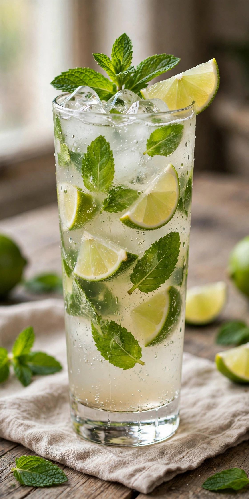

| Mojito | |
|---|---|
 | |
| Type | Cocktail (highball) |
| Primary alcohol | White rum |
| Served | On the rocks |
| Garnish | Mint sprig; lime wedge |
| Standard drinkware | Collins glass |
| Ingredients | White rum, fresh mint leaves, lime juice, sugar (traditionally cane sugar), soda water |
The mojito (Spanish: [moˈxito]) is a traditional Cuban punch consisting of five ingredients: white rum, sugar (traditionally sugar cane juice), lime juice, soda water, and mint. Its combination of sweetness, citrus, and herbaceous mint flavours complements the rum, and it has become one of the most popular rum-based highballs in the world.
Havana, Cuba, is the birthplace of the mojito, though its exact origins are disputed. One tradition traces it to a 16th-century drink called El Draque, after Sir Francis Drake, made with aguardiente. Another attributes its popularisation to the Afro-Cuban community and to La Bodeguita del Medio restaurant in Havana, which claims to have served it since 1942 and was frequented by Ernest Hemingway — a famous inscription attributed to him there reads "My mojito in La Bodeguita, my daiquiri in El Floridita." The name may derive from mojo, a Cuban lime-based sauce, or from the Spanish mojadito ("a little wet").
Fresh mint leaves and sugar are muddled gently to release the mint oils without tearing the leaves; lime juice and rum are added, and the mixture is topped with crushed ice and soda water and garnished with a mint sprig and lime wedge. The mojito is an IBA Official Cocktail. Variants substitute flavoured rums, fruit purees, or herbs such as basil, while the alcohol-free version is sometimes called a "nojito."
Surveys regularly place the mojito among the world's best-selling classic cocktails; its prominence grew in the 2000s following its appearance in the James Bond film Die Another Day (2002).
See also: Mint julep; Daiquiri; Cuba libre; Caipirinha; Ernest Hemingway.